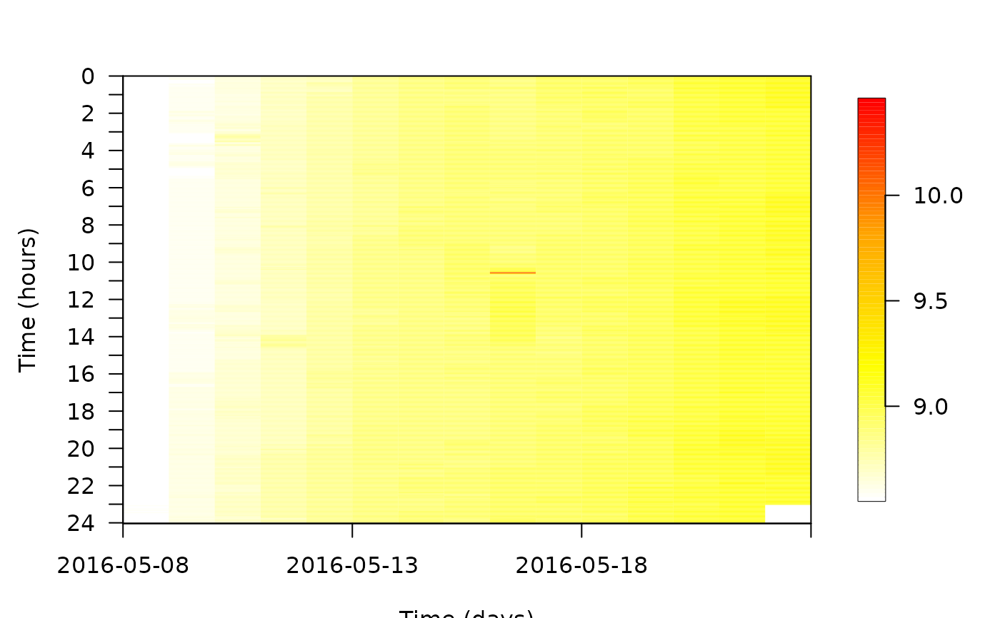
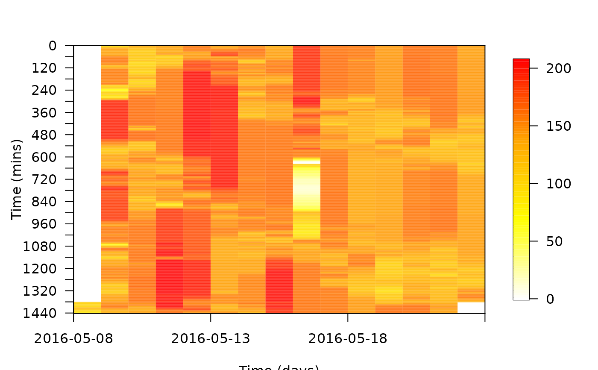
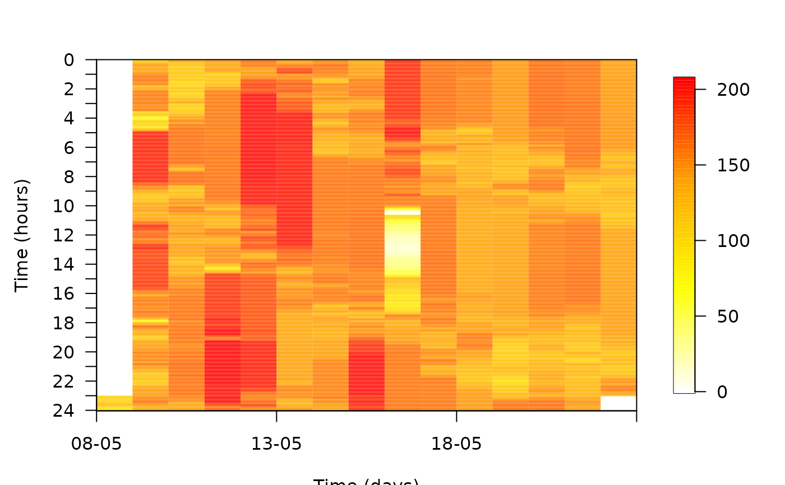
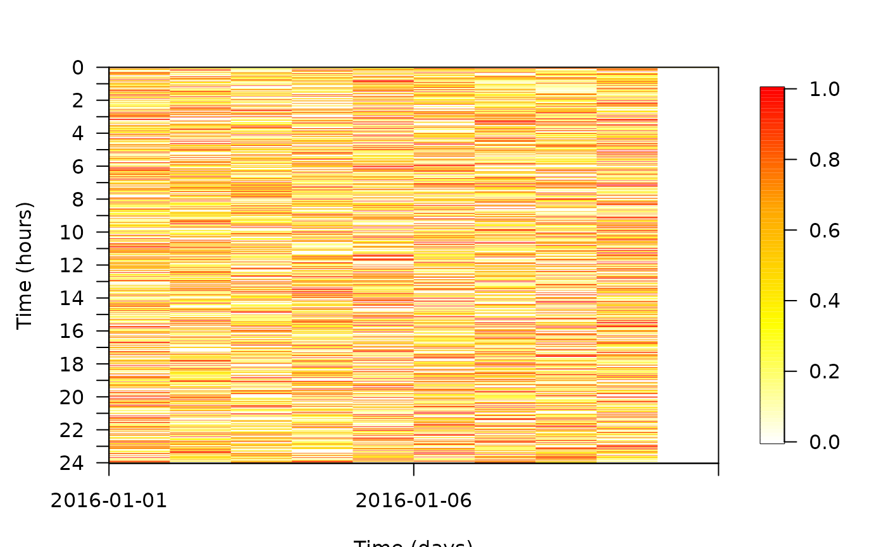

R/pretty_ts_mat.R
pretty_ts_mat.RdThis function produces a 2-dimensional time plot of a response variable. The surface of the plot shows the response variable in relation to time of day on one axis (usually the x axis) and time of year (specifically, the date) on another axis (usually the y axis). The function was motivated by the need to visualise how the depth of aquatic animals changes over the course of the day and how these patterns change over the course of the year (e.g., as in Teo et al., 2013).
pretty_ts_mat(
x,
y,
res,
t1_units = function(x) x/60,
t2_units = function(x) as.character(x),
retain_orientation = TRUE,
xtick_every_n = 5,
ytick_every_n = 60/res,
xlab = "Time (days)",
ylab = "Time (hours)",
return_mat = FALSE,
verbose = TRUE,
...
)A vector of time stamps in POSIXct (DateTimeClasses) format.
A numeric vector of values of the response variable.
A number which defines the (minimum) resolution (in minutes) between sequential observations. The function works best with regularly spaced observations in time (see Examples).
A function which defines the units of the axis of within-day variation. Since res is in minutes, function(x) x results in units of minutes, while the default function(x) x/60 results in units of hours.
A function which defines the format of the axis of between-day variation. The function takes in objects of class Date and returns axis labels. The default option is to retain dates in YYYY-MM-DD format, but other formats (e.g., Julian day) can be expressed via this option.
A logical input which defines whether to plot time of day against time of year (TRUE) or vice-versa (FALSE).
A numeric input which defines the spacing between sequential tick marks for the x axis (see pretty_mat).
A numeric input which defines the spacing between sequential tick marks for the x axis (see pretty_mat).
The x axis label.
The y axis label.
A logical input which defines whether or not to return the matrix plotted.
A logical input which defines whether or not to print messages to the console. This can be useful in monitoring function progress, especially for large datasets.
Additional arguments passed to pretty_mat for plot customisation.
The function returns a plot and, if requested, a matrix of time of day (in user-specified units but hours by default) x time of year (in user-specified units but days by default).
Teo, S.L., Sandstrom, P.T., Chapman, E.D., Null, R.E., Brown, K., Klimley, A.P., Block, B.A., 2013. Archival and acoustic tags reveal the post-spawning migrations, diving behavior, and thermal habitat of hatchery-origin Sacramento River steelhead kelts (Oncorhynchus mykiss). Environ. Biol. Fish 96, 175–187.
The plot is produced by pretty_mat.
#### Define an example dataframe
dfa <- dat_flapper[dat_flapper$id == "A", ]
#### Example (1): Visualise plot for different response variables
# ... sampled at 2 minutes resolution
pretty_ts_mat(dfa$timestamp, dfa$depth, res = 2)
#> Step 1: Set up...
#> Step 2: Defining time categories...
#> Step 3: Creating matrix of time (minutes) x time (days)...
#> Step 4: Plotting matrix of time (minutes) x time (days)...
pretty_ts_mat(dfa$timestamp, dfa$temp, res = 2)
#> Step 1: Set up...
#> Step 2: Defining time categories...
#> Step 3: Creating matrix of time (minutes) x time (days)...
#> Step 4: Plotting matrix of time (minutes) x time (days)...

#### Example (2): Adjust the units on the time of day axis via t1_units
pretty_ts_mat(dfa$timestamp, dfa$depth,
res = 2,
t1_units = function(x) x,
ylab = "Time (mins)")
#> Step 1: Set up...
#> Step 2: Defining time categories...
#> Step 3: Creating matrix of time (minutes) x time (days)...
#> Step 4: Plotting matrix of time (minutes) x time (days)...

#### Example (3): Adjust the format of the time of year axis via t2_units
# Julian day
pretty_ts_mat(dfa$timestamp, dfa$depth,
res = 2,
t2_units = function(x) lubridate::yday(x))
#> Step 1: Set up...
#> Step 2: Defining time categories...
#> Step 3: Creating matrix of time (minutes) x time (days)...
#> Step 4: Plotting matrix of time (minutes) x time (days)...
# day-month
pretty_ts_mat(dfa$timestamp, dfa$depth,
res = 2,
t2_units = function(x) format(x, "%d-%m"))
#> Step 1: Set up...
#> Step 2: Defining time categories...
#> Step 3: Creating matrix of time (minutes) x time (days)...
#> Step 4: Plotting matrix of time (minutes) x time (days)...

#### Example (4): Adjust the number of tick marks via xtick_every_n and ytick_every_n
pretty_ts_mat(dfa$timestamp, dfa$depth,
res = 2,
t1_units = function(x) x,
ytick_every = 120,
ylab = "Time (mins)")
#> Step 1: Set up...
#> Step 2: Defining time categories...
#> Step 3: Creating matrix of time (minutes) x time (days)...
#> Step 4: Plotting matrix of time (minutes) x time (days)...
# Other customisation is implemented via ... (see ?prettyGraphics::pretty_mat)
#### Example (5) The function works best with regularly spaced observations
# For irregularly spaced observations, there are gaps. Therefore, some initial
# ... regularisation may be beneficial here.
x <- seq.POSIXt(as.POSIXct("2016-01-01"), as.POSIXct("2016-01-10"), by = "1 min")
x <- sample(x, size = length(x)/2, replace = FALSE)
y <- runif(length(x), 0, 1)
pretty_ts_mat(x, y, res = 2)
#> Step 1: Set up...
#> Step 2: Defining time categories...
#> Step 3: Creating matrix of time (minutes) x time (days)...
#> Step 4: Plotting matrix of time (minutes) x time (days)...
